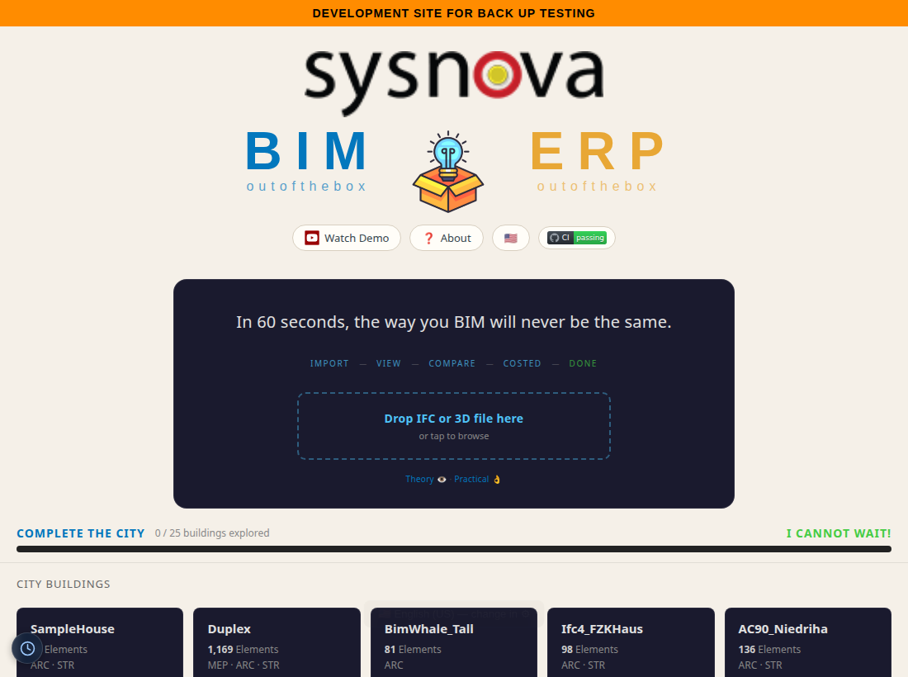

BIM OOTB — Browser Viewer User Guide¶
← Back to the User Guide · Home
See also: Clash Detection · 4D/5D Analysis
Quick Start — your first building¶
Zero install. Everything runs client-side in any browser; download a building once and it is cached in IndexedDB, so the second visit is instant. Works on desktop and mobile.
You enter through the Matrix front door (index.html) — not viewer/viewer.html directly (that
bare URL opens an unrelated warehouse view). On the front door choose the Buildings / IFC door and
the BUILDINGS & IFC hub opens:
→ Front door (index.html) → choose Buildings / IFC

Three ways in — pick one:
- Open a ready-made building. Tap a card under City Buildings or Landmark Buildings (SampleHouse, Duplex, Clinic, Terminal, Hospital, …). It downloads that building's DB (0.5–177 MB), flies to it, and streams the geometry in the 3D viewer.
- Drop your own IFC. Drag an
.ifc/.obj/.dae/.glbfile onto the centre "Drop IFC / 3D files here" zone (or tap it to browse). The file is parsed in-browser and opens in the viewer. - Add to an existing project. When you drop a file that matches a building already loaded, a
prompt offers Merge (combine disciplines —
Enter) or New (a fresh building —Escape); two versions of the same building can be opened side-by-side with Compare Versions.
Once the viewer opens:
- Watch the progress bar and element flicker as geometry streams in.
- Click any element → the Info panel shows its IFC class, name, GUID, storey, discipline, material.
- Filter by storey or discipline (bottom-left panels) to isolate part of the model.
- Alt+Z for X-Ray, ☆ for white background, ✈ to fly around, 📷 for a screenshot.
- Open another building → the first pauses; tap back to resume.
Full navigation, panels, and the keyboard cheat-sheet are below.
Run it on your own machine¶
Local setup (3 steps):
# 1. Go to deploy folder
cd deploy
# 2. Start local server
python3 -m http.server 8080
# 3. Open the front door in your browser, then choose Buildings / IFC
# http://localhost:8080/index.html
Per-building DBs must be in deploy/buildings/:
- {Name}_extracted.db — metadata + transforms
- {Name}_library.db — geometry BLOBs (vertices + faces)
Then open http://localhost:8080/index.html, choose Buildings / IFC, and use the same three ways in as above.
DB sizes:
| Building | Elements | Download (ext+lib) |
|---|---|---|
| SampleHouse | 65 | 0.5 MB |
| Duplex | 1,169 | 2.8 MB |
| Clinic | 16,480 | 31 MB |
| Terminal | 48,428 | 59 MB |
| Hospital | 63,917 | 88 MB |
| LTU AHouse | 125,698 | 177 MB |
3D Navigation¶
| Input | Action |
|---|---|
| Drag | Orbit camera |
| Shift + Drag | Pan camera |
| Right-click drag | Pan camera |
| Scroll / Pinch | Zoom |
| Click element | Identify — shows IFC class, name, GUID, storey, material |
| Alt+Z | X-Ray toggle (15% opacity) |
| F11 | Fullscreen toggle |
Toolbar buttons (top-right panel):
| Button | Action |
|---|---|
| Clear | Remove all streamed meshes |
| X-Ray | Toggle 15% transparency on all elements |
| 📷 | Screenshot (saves PNG to Downloads/) |
| ⛶ | Fullscreen |
| ☆ / ☾ | Light/dark theme |
| ✈ | Fly around rendered buildings |
Panels:
| Panel | Position | Shows |
|---|---|---|
| BIM OOTB | Top-left | Buildings, streaming progress, element flicker |
| Tools | Top-right | Filter, buttons, building list |
| Info | Bottom-right | Clicked element metadata (class, GUID, storey, disc, material) |
| Storeys | Bottom-left | Floor filter — click to isolate one storey |
| Disciplines | Bottom-left | Discipline toggle — show/hide ARC, STR, MEP etc. |
| Status | Bottom-centre | Current streaming state |
All panels collapse with −/+.
Viewer Features¶
All browsers (desktop + mobile):
- 3D orbit, pan, zoom (mouse or touch)
- Click any element → IFC class, GUID, storey, discipline, material
- Fly-tour — auto-orbits rendered buildings, click to stop
- Indoor walk-through — follows IfcSpace/door graph through the building
- X-Ray mode (Alt+Z) — transparent view, see structure through walls
- Measure tool — tap two points, get distance in metres
- Section cut — horizontal clip plane, slider to cut through floors
- Storey filter — isolate a single floor
- Discipline toggle — show/hide ARC, STR, MEP, ELEC, etc.
- Screenshot — saves current view as PNG
- Deep-link URL — camera + building state encoded in hash, shareable
- IndexedDB cache — download once, instant on revisit
- City mode — 786 building bboxes, click to download + stream on demand
Mobile-only (touch-optimised):
- Site Camera — phone camera with GPS + compass + timestamp overlay
- BIM picture-in-picture — 3D snapshot composited into the photo
- Markup tools — arrow, circle, freehand draw, text annotations
- Share → WhatsApp (with BIM context baked into image)
- GPS Walk Mode — blue dot tracks position in the model
- Wall X-Ray — tap a wall in Walk Mode to see MEP behind it
- Issue log — capture site issues with photo + GPS + classification, export to Excel
Keyboard & Mouse Cheat-Sheet¶
| Key / Gesture | Action |
|---|---|
| Drag | Orbit camera |
| Shift + Drag / Right-click drag | Pan camera |
| Scroll / Pinch | Zoom |
| Click element | Identify — IFC class, name, GUID, storey, material |
| Front / Back / Left / Right | Elevation views |
| Roof | Roof plan view |
| Alt+Z | Toggle X-ray mode |
| F11 | Toggle fullscreen |
Authoring — editing the structural grid, sketching, extruding — lives in the DAGeVu Modeller, not the Viewer.
Further Reading¶
| Doc | What |
|---|---|
| Kernel-ERP User Guide | iDempiere browser ERP — login → install → POS → reporting |
| DAGeVu Modeller Guide | Author geometry — the editable 3D Grid |
| Clash Detection | Clash detection engine |
| 4D/5D Analysis | nD analytics (4D–8D) |
Copyright (c) 2025-2026 Redhuan D. Oon. MIT Licensed.